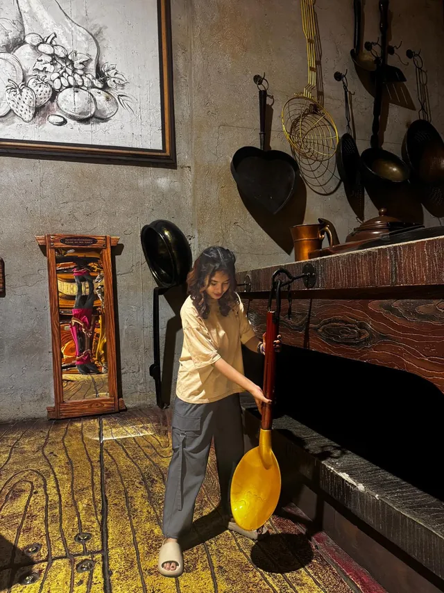
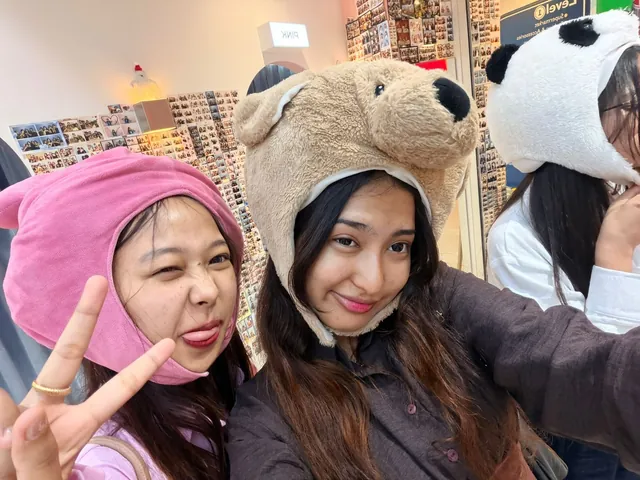
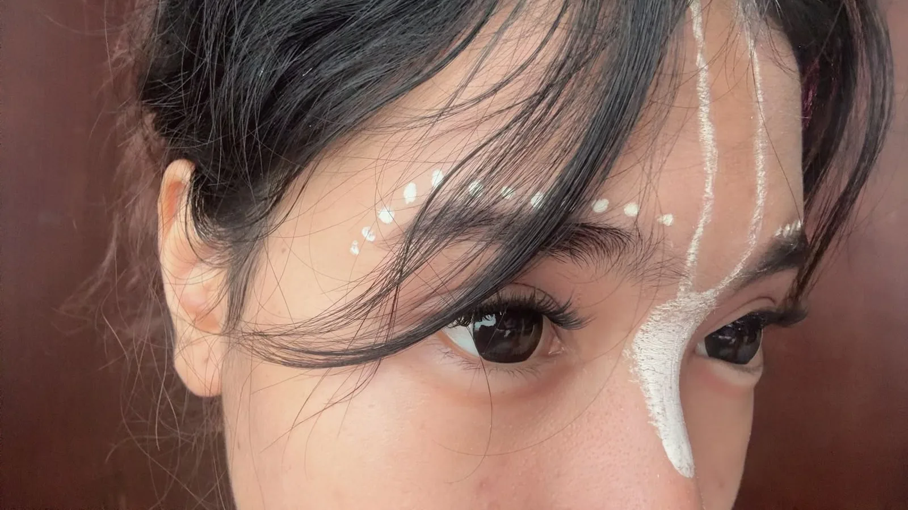
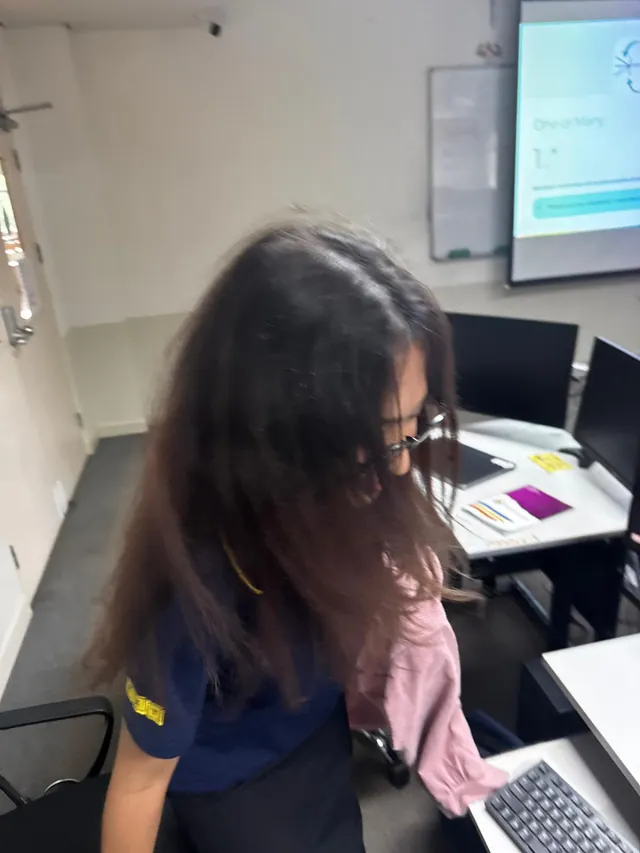

You hum when you cook
You have no idea you are doing it. I have decided this is the best thing I know about anyone.
She asked you to keep a secret.
Tap to open
October 3rd
You put a finger to your lips and asked me to keep it quiet. I am bad at keeping quiet. So I built you something instead.
Act 02
Nepal
--:--
Ramesh
—
Thailand
--:--
Rin
We have never been in the same room. Sixteen months, two time zones, one phone held up between us. There are seventy-five minutes between your morning and my night, and I have learned to live inside that gap.
I still check your weather before I check my own.
Kathmandu Ramesh
Bangkok Rin
Two rooms. One call. Same second.
Act 04
Not the big romantic ones. The small, stupid, specific ones that I would notice if they stopped.
You have no idea you are doing it. I have decided this is the best thing I know about anyone.
Slower. Softer. A version of you that nobody else gets to hear, and it is mine.
You send them without checking first. That is not a small thing. That is trust.
The first time you did it I had to put the phone down for a second and pretend it was the signal.
You committed to it completely. I did not. I have regretted that every day since.
I make mine wrong now, on purpose, because it tastes like you being nearby.
You push them up a nose that is already wearing them. Every single time. I love it every single time.
We argue, we go quiet, we come back, we are better. Tuesdays belong to us now.
I am not going to tell you how many. I am only going to tell you that it exists.
A thousand spoons in that museum. You found the biggest one in four minutes. Of course you did.
Drawn on by an app, and you still asked me if you looked okay. You looked ridiculous. You looked perfect.
You always wait for me to say it. So I have learned to say it slowly.
Act 05
Not the best ones. The ones that actually happened.




Act 06
Some of these are romantic. Some of them are just true, which is better.
75
minutes
between your morning and my night
16
months
of you, and I have stopped counting like a beginner
2
countries
one call, held up between us
~2,210
kilometres
Kathmandu to Bangkok. I checked. Twice.
1
of you
which is the entire problem
∞
and counting
times I have replayed that video. I am not giving you the real number.
Act 07
Twenty-nine seconds of her, and then she says something I was not ready for.
I have watched this more times than I will ever admit.
And the rest of them
Act 08
Things I have thought and not said out loud. Tap the heart for one.
a note from Ramesh
Act 09
Act 10
I keep starting this and stopping, which is a thing I do instead of saying something properly, so I am going to say it properly this once.
A year and four months. I know it is not a lifetime. I know you have heard me say that before. But I have learned your whole vocabulary in that time — the way you hum when you are cooking, the particular silence you get when you are tired and do not want to explain why.
We have never been in the same room. That is still the part I cannot get used to. I know what your voice sounds like at 2am and I know you take your tea too sweet, and I know neither of those things by having been there.
So this is me trying to be there in the only way I can manage from here. Carefully. With attention. I would rather send you something small and true than something large and rehearsed.
We argue. I think about that more than I should. I have decided it is not a warning sign — it is just what it sounds like when two people who matter too much to be polite are in the same story. Every one of those fights made us harder to break and every one of the makeups made me certain of you.
Happy birthday, Rin. Not the version of you everyone else gets on their birthday. The version that puts a finger to her lips and asks me to keep a secret, and then does not let me.
I am not going to promise you a date. I will just keep turning up on this screen until the turning up stops being enough and becomes a Tuesday, in person, with the tea exactly as sweet as you like it.
Ramesh
From Nepal · 3rd October
Act 11
Not the big sweeping ones. The ones I can keep on a normal Wednesday.
I will tell you when I am upset, instead of going quiet and hoping you work it out.
I will learn the difference between your tired silence and your hurt one.
I will never make you ask twice for the truth.
I will be there for the small days, not only the big ones worth photographing.
I will keep turning up on this screen for as long as it takes to stop needing it.
I will be boring with you for as long as you will let me. That is the whole promise.
Act 12
Long-press it, or save it. It is yours, not mine.
Made for you, on a computer in another country.
3rd October
Happy birthday, my love
Rin
Two time zones, one call, and sixteen months of this.
Now go and eat something sweet. That is not a suggestion.